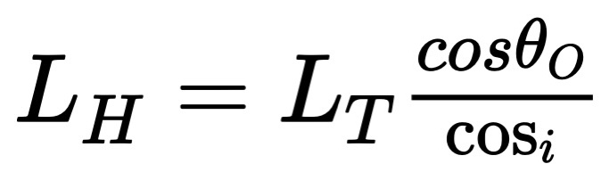
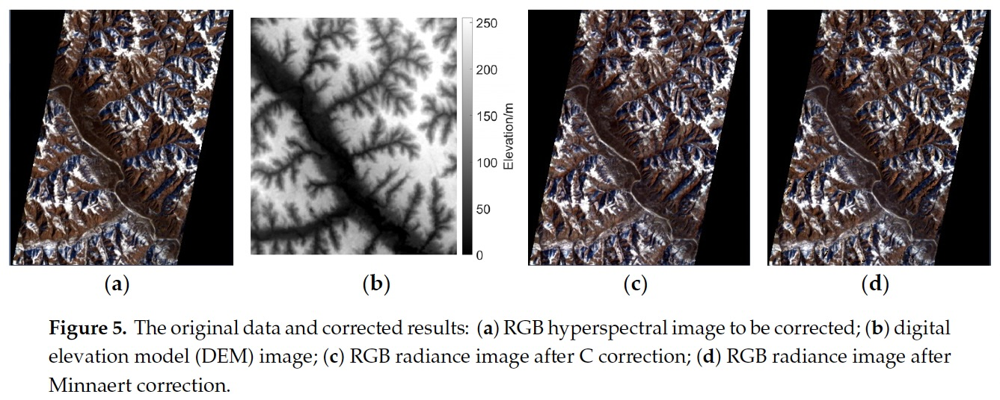

3 Week 3 - Corrections
3.1 Summary
This week focuses on corrections in remote sensing, often referring to the process which is applied to the raw satellite image. There are three types of corrections that can be used in remote sensing, and each poses a different solution to the type of image distortion encountered.
3.1.1 Geometric correction
There are different types of errors that can occur when satellite data is being collected. In the case of this error, image distortions are at the forefront. For this type of correction, there are four potential image distortions that can be encountered: view angle, topography, wind and rotation of the Earth.
In order for this process to work, ground control points (GCPs) need to be identified in order to match points to the satellite image. Here the coordinates are modelled to produce geometric transformation coefficients. This is then plotted and we set the value to 0.5 in order to minimise the root-mean-square-deviation (RMSE).
There is another solution that can be applied for geometric correction. This involves the following calculation: (observed - predicted ((the residual))^2. Here the results will be summed up and divided by the no. of data points, and additionally, you calculate the square root of that result.
The image below illustrates how this process works.

Image source: AWF Wiki (2024)
This indicates that the image may be re-sampled as a result. The following list provides ways in which re-sampling can be applied:
Linear
Cubic
Cubic Spline
Nearest Neighbour
3.1.2 Atmospheric correction
According to GIS Geography (2023), atmospheric correction is the process which “removes the scattering and absorption effects from the atmosphere”. There are three types of atmospheric correction that can be applied:
Relative (to something) correction aims to normalise the intensities of bands within a single image and from multiple dates to one. This can be achieved through the following processes:
Dark Object Subtraction (DOS) that searches for the darkest value in each band and subtracts it from each pixel.
Pseudo-Invariant Features (PIFs) that “assumes brightness pixels” of a base image and adjusts it according to the regression result.
Absolute (definitive) correction aims to change the brightness values into “scaled surface reflectance”, which is later compared to the surface reflectance. However, some datasets may require image altitude and atmospheric visibility data in order for this correction to be properly applied.
Empirical Line Correction which uses the measurements that derived form the linear regression against the satellite data. This involves the following calculation: Reflectance (fieldspectrum) = gain * radiance(input data) + offset
The image below shows the difference between satellite images before (left image - which shows “top of atmosphere reflectance”) and after (right image - which shows “surface reflectance”) atmospheric correction is applied. Often, “absorption and scattering creates haze in an image, which reduces the contrast of the image” (Lecture 3, slide 27) and this can be seen across the two images below.

Image source: Mapbox (2013)
3.1.3 Topographic correction
This type of correction is also know as Orthorectification Correction which is a subset of georectification. It is the process where distortions are removed through setting the viewpoint to the nadir, and in addition to that it provides coordinates to the image. This error occurs as “The topographical variations in the surface of the earth and the tilt of the satellite or aerial sensor can affect the distance with which features on the satellite or aerial image are displayed.” (Satellite Imaging Corporation (2022). The image below shows the layers applied when performing this correcton, which inidicates the requirement of an elevation model.

Image source: Intermap (2019)
Additionally this solution requires the cosine correction model:

LH is the “corrected radiance observed from the horizontal surface” - from DN to TOA (digital number to top of atmosphere)
LT is the “radiance before correction observed from the inclined face”
i is the “solar incidence angle” - the cosine of the angle between the normal line of the slope and the solar zenith
θo (theta) is the “solar zenith angle”
3.1.4 Radiometric calibration
This is where “sensors capture image brightness as digital number” through recording the “intensity of the electromagnetic radiation” (Humboldt State University 2020) and can be measured in the following ways:
in watts (power or light)
per square meter (surface within FOV)
per steradian (angle of view)
per nanometer (wavelength)
List taken from Lecture 3, slide 48
3.1.5 Definitions
Azimuth angle - “the compass direction from which the sunlight is coming” that informs you which direction to face and can vary from 0˚ to 360˚
Georectification - giving coordinates to an image
Nadir - view of directly looking down on an area
Orthorectification - removing distortions by making the pixels viewpoint at the nadir
Scattering - can create the “adjacency effect”, radiance from pixels nearby mixed into pixel of interest
Slope - attenuated atmospheric correction which involved the “dimming and blurring from scattering of light”. This is the electromagnetic wave absorption and scattering by the atmosphere.
Solar azimuth - compass angle of the Sun (N=0˚) 90˚E at sunrise and 270˚W at sunset
Solar zenith - angle of local zenith (above the point on ground) and Sun from vertical (90˚ elevation)
Spectral radiance - “the amount of light within a band from a sensor in the field ov view (FOV)”
View angle - this means that the image angle doesn’t align with the Nadir.
3.2 Applications
Ilori et al. (2019) conducted a study where they set out to investigate atmospheric correction techniques particularly for coastal remote sensing cases. They aimed to extract the ocean colour which “provides information on in-water optical properties” (pg 1), however this is difficult to extract as only “~10% of the total signal reaches the TOA” (pg 2). The main method that was applied to this study was atmospheric correction, but the researchers recognised that “residual errors can introduce large uncertainties in Rrs estimates, resulting in erroneous retrieval of OC products such as apparent optical properties” (pg 2). They found that the application of atmospheric correction was unreliable for “443 and 482 nm channels” but where able to perform well at”only a few sites located in nearshore and inland waters” (pg 12).
Ma et al. (2020) conducted a study to analyse uncertainty for topographic correction. They applied the cosine correction and the digital elevation model (DEM) in their methods and found that the uncertainty of the solar incidence angle was related to the rugged terrain, and its radiance substantially increased after this correction was applied. Despite these methods being different from each other, it is clear that there are other errors and uncertainties that can appear even after corrections have been applied to the satellite images.

Image source: Ma et al. (2020)
3.3 Reflection
This weeks topic was relatively interesting for me to learn about. I was not aware that there would be such a variety of errors and correction types that can be applied to satellite imagery. Having insight into correction methods seems important as it ensures that errors are removed to an extent and the quality and accuracy of the image are at the forefront. In this week, joining datasets and enhancements were also covered, both of which are equally important to what was summarised above, but I decided to focus on the correction types as I felt that this is a necessary step that needs to take place prior to analysing imagery for whatever research purpose, otherwise if this isn’t done, it may result in issues regarding the accuracy of data analysed which may further hinder and results derived from the imagery. I have never encountered any of this before, so it was quite overwhelming to grasp at first, as there are several sub-components to each correction method. However, I still consider this significant “preventive” that can aid any researcher when engaging in remote sensing analysis.
3.4 References
AWK Wiki (2024) http://wiki.awf.forst.uni-goettingen.de/wiki/index.php/Geometric_corrections
GIS Geography (2023) https://gisgeography.com/atmospheric-correction/
Humboldt State University (2020) http://gsp.humboldt.edu/olm/Courses/GSP_216/online/lesson7/radiometric.html
Ilori, C. O. et al. (2019) Analysing Performances of Different Atmospheric Correction Techniques for Landsat 8: Application for Coastal Remote Sensing. Remote Sensing. 11(4), pg 1-20. [Online] Available via: https://www.mdpi.com/2072-4292/11/4/469
Intermap (2019) https://www.intermap.com/blog/orthorectification-in-a-nutshell
Ma, Z. et al. (2020) Uncertainty Analysis for Topographic Correction for Hyperspectral Remote Sensing Images. Remote Sensing. 12(4), pg 1-24. [Online] Available via: https://www.mdpi.com/2072-4292/12/4/705
Mapbox (2013) https://blog.mapbox.com/before-and-after-atmospheric-correction-97f55cb2b5d1
Satellite Imaging Corporation (2022) https://www.satimagingcorp.com/services/orthorectification/#:~:text=The%20image%20data%20must%20be,angles%2C%20positions%2C%20and%20areas.